2.2 多模态和循环结构¶
学习目标¶
- 了解多模态数据常见的处理方式
- 掌握多模态数据处理插件的使用
- 掌握循环结构的使用
一、概述¶
实际在使用Coze解决业务问题的时候，除了文本以外，还有其他类型的数据（图像、音频、视频等）需要进行处理，也会有需要在工作流批量处理的需求。在本章节，我们学习如何处理不同类型的数据，以及如何使用循环进行批处理。
二、多模态数据处理¶
在使用coze实现agent的时候，经常会处理一些文字以外的输入类型，比如图片、音频、视频。在coze中，图片、音频、视频处理的方式大是通过自带的音视频数据处理节点或插件完成，这些插件大多数都是由各个大模型供应商企业提供，通过调用其他大模型实现。接下来，我们将介绍一些常见的多模态数据的厂家处理方式，在实际工作中用到时，可以快速找到对应的解决方案。
除了处理输入的不同类型的数据以外，在实际工作中，还有一些场景会基于coze生产一些音视频等数据。比较典型的就是电商业务场景，会经常使用coze实现AIGC（基于人工智能生成内容），包括：
- 文案：基于产品介绍和LLM，生成风格化的文案（比如小红书文案）
- 商品图片：基于文生图、图生图等功能，生成商品图。还可以结合一些图像编辑类的模型，一件替换模特的衣服、首饰等，节省模特成本。
- 广告语音：基于文案生成广告配音
- 广告视频：基于文案，商品图片等生成广告视频，节省 广告拍摄成本
综上所述，接下来我们将通过一些案例介绍一些比较常用的多模态数据的处理工具。
1 图像类型¶
在Coze平台基础使用章节中，我们已经学习过了图片理解功能，但是在Coze平台中，图片类型相关的处理能力不仅只有这一种。还包括：
1.1 文生图¶
在流水线中添加图像生成节点，选择模型、设置好分辨率等信息：
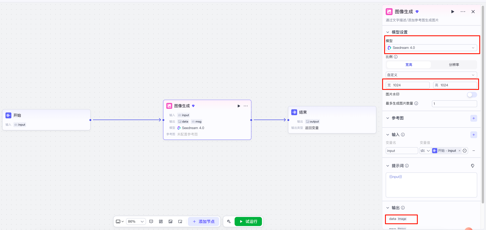
输入提示词：
以下是生成结果，因为我们这里使用的是字节当前最强的图片生成模型Seedream 4.0。可以看到，图片生成的效果非常逼真，光影效果好，并且还有景深，就像使用微单相机拍摄的。
1.2 图像画质提升¶
在工作流中添加一个图片清晰度提升节点，并把原图传入
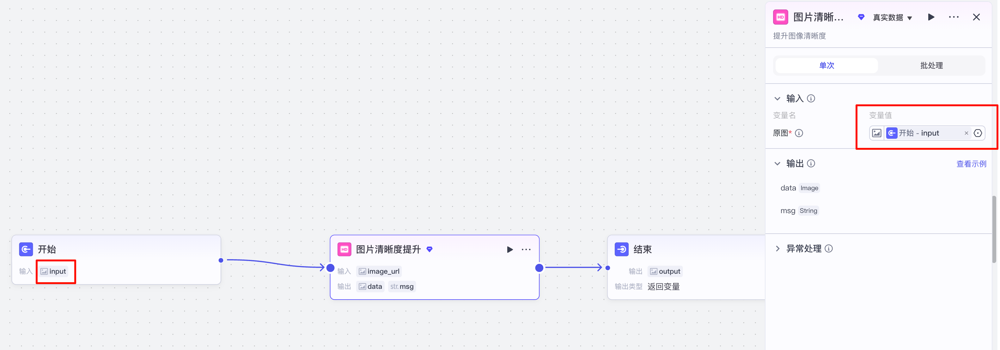
图片提升前（素材 05-低分辨率图片.jpg）：

提升后（这里为节省页面空间，做了缩小，可以右键查看原图片）：
可以看到图像的分辨率得到了提升，但由于本身的素材就只能这样了。
除此以外，图像相关的还有其他的插件，比如：一键换脸、抠图等，可根据业务需求自行选择。有兴趣的同学也可以在插件商店中筛选”图像“相关的，尝试使用其他处理方式。
2 音频类型¶
2.1 语音识别(ASR)¶
语音识别（ASR, Automatic Speech Recognition）就是把语音转化成文字的算法， 在coze中使用插件即可实现。 在插件商店中搜索 ”语音识别“，包含两个版本。一个是小模型的语音识别，一个是大模型的语音识别。 区别在于识别准确率和资费上。
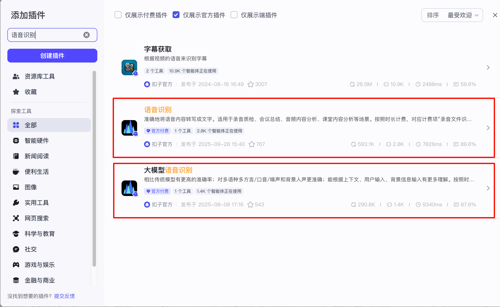
在工作流中添加一个”语音识别“节点：
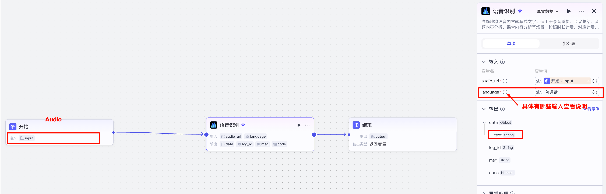
试运行，并上传我们的素材 06-音频片段.wav：
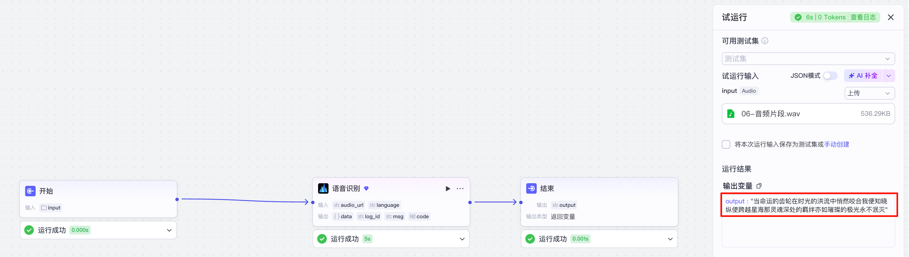
可以看到，这里输出了素材中的内容。文字识别都是对的，但是这里的问题在于没有标点符号，可以在语音识别节点后追加一个LLM节点，用于输出润色。过程略，同学们可自行优化。
2.2 语音合成(TTS)¶
语音合成（Text-to-Speech）是将文本信息转化为语音信息的人工智能技术，在coze中同样可通过插件实现。在插件中搜索”语音合成“。分为两个版本
- 语音合成：使用扣子的模型实现语音合成
- 语音合成火山版：使用火山引擎上的更加专业的模型实现语音合成
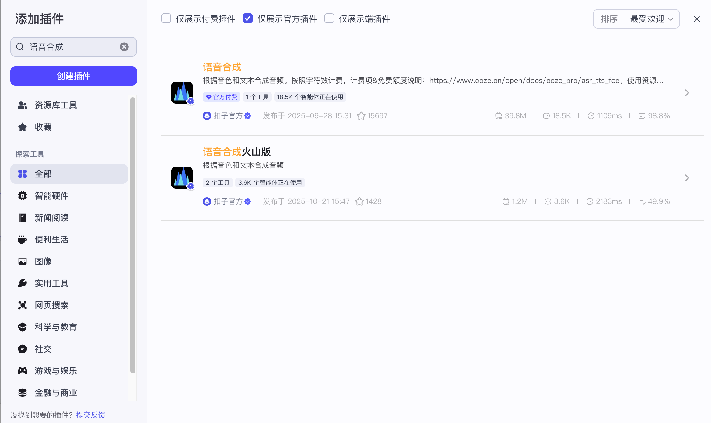
在工作流中创建一个语音合成节点：
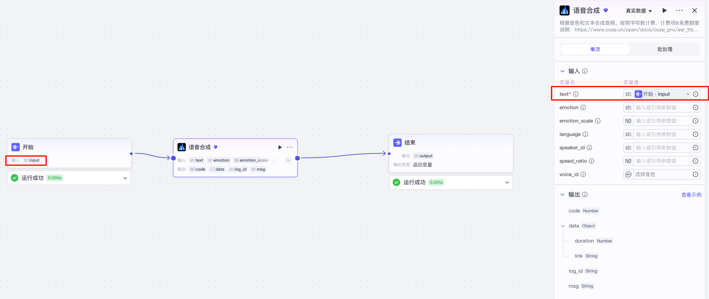
除了文本是必填项以外，其他的都是可选项。具体可根据coze官方手册使用。可以指定情绪、语种、播报人、音色等。 接下来，我们试运行工作流，输入以下提示词：
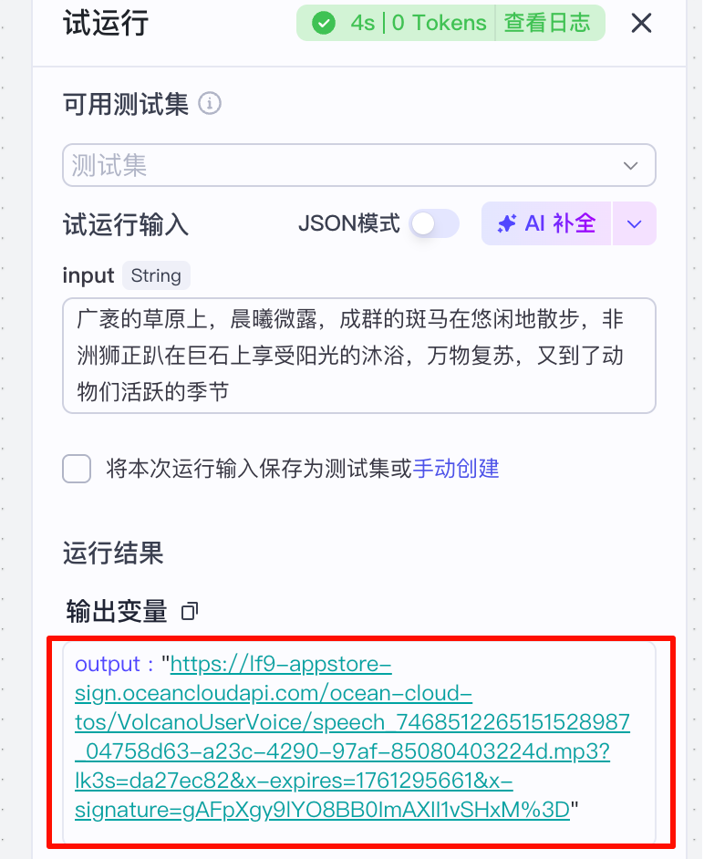
生成音频如下(词性解说男声)：
3 视频类型¶
视频类型的处理这里我们主要介绍视频生成。视频生成是多模态大模型近期比较新型的场景，能够根据用户输入的文字、图片，以及各类设置（如分辨率、时长等），生成视频。
在工作流中增加一个”视频生成节点“，传入数据，设置使用的模型，并设置参数，如下图：

试运行工作流，传入提示词：
核心主题与风格：拍摄一个用于电商平台的、展现奢华与时尚感的足金手镯短视频。视频整体质感高级，凸显金手镯的精致工艺与佩戴时的优雅气质
。
场景与布景：
主场景：一个光线柔和、布置现代的室内空间，可能包含简约的梳妆台或铺有浅色丝绸的桌面
。背景简洁，以突出手镯本身。
细节：可有少量高端饰品（如香水瓶、珠宝盒）作为点缀，但遵循“少即是多”的原则，避免分散注意力
。
光线：利用从窗户透进的柔和自然光，或在影棚内使用扩散照明，确保手镯光泽得到最佳呈现，减少金属表面的强烈反光
。
主体与画面：
主角：一款设计精美的足金手镯。
关键画面：
开场特写：镜头对手镯进行极致特写，清晰展现其精细花纹、质感与璀璨光泽
。
佩戴展示：一只优雅的手缓缓拿起并佩戴上手镯，展示佩戴的便捷性与上手效果
。
动态光泽：手腕轻轻转动，展示手镯在不同角度下流动的光泽
。
组合搭配（可选）：可与其他简约手链或手表叠戴，展示其搭配可能性。
运镜与节奏：
镜头一（开场）：缓慢推近的特写镜头，聚焦于手镯最精美的雕刻或纹理部分，瞬间抓住眼球。
镜头二（展示）：平稳跟随镜头，从手镯被拿起至佩戴上手腕的过程，保持画面稳定。
镜头三（动态）：环绕运动或轻微旋转拍摄佩戴手镯的手腕，多角度展现手镯形态与光泽变化。
镜头四（收尾）：缓慢拉远，展示手镯作为整体造型一部分的完整效果，画面定格于优雅的姿势。
节奏：整体节奏舒缓，突出高级感和品质感。
情感与氛围：通过光影和运镜，传递金手镯所代表的“富贵象征”、“永恒承诺”或“圈住幸福”的美好寓意，营造轻奢、愉悦的情感氛围
。
点击运行，并等待。结果如下图。 这里在执行的时候时间会比较长，且消耗的token比较高。
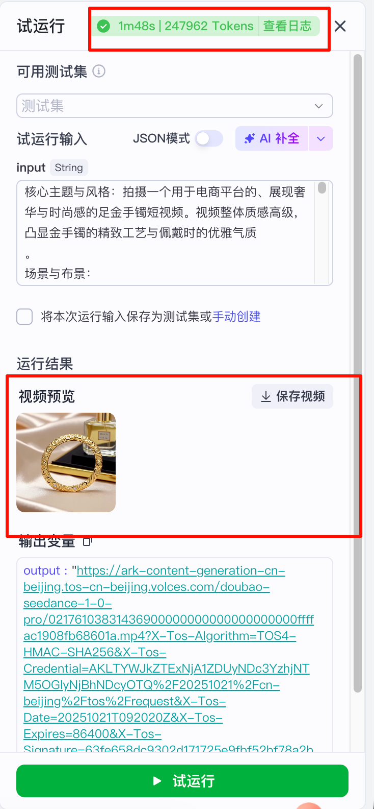
生成的效果视频如下：
二、 循环结构¶
1 什么是循环结构¶
循环是一种常见的控制机制，用于重复执行一系列任务，直到满足某个条件为止。扣子工作流提供循环节点，当需要重复执行一些操作，或循环处理一组数据时，可以使用循环节点实现。在实际开发中，一般用于相同任务的批量处理，比如批量生成内容、批量执行订单数据等场景。

循环节点的配置方式取决于循环类型。循环类型是循环节点的运行模式，支持设置为使用数组循环、指定循环次数和无限循环。
使用数组循环：
使用数组循环类似编程语言中的 for 语法结构。使用数组循环用于遍历一个已知的序列，对序列中的每个元素执行一系列相同的步骤。典型场景如下：
- 长文生成或长文总结：输入每个段落的主题，通过循环节点依次生成各个段落，将完整的文章打包输出。也可以通过输出节点实现每轮循环之后流式输出段落内容。长文总结的原理类似。
- 问卷调查：针对多个产品进行满意度、NPS 等问卷调查，每个产品的问卷题目相同，根据每一轮问题的用户评分算出各个产品的 NPS 得分。
在编程中，数组是一种数据结构，用于存储一系列元素。数组中的基础概念如下：
- item：元素，即数组中的单个数据。数组由多个元素组成，每个元素可以是数字、字符、字符串等数据类型。
- index：索引，指数组中元素的位置。索引从 0 开始计数，表示第一次循环，1 表示第二次循环，2 表示第三次循环，以此类推。最后一次循环的索引为 n-1，其中 n 为循环次数。
以下是官方文档的一个例子：
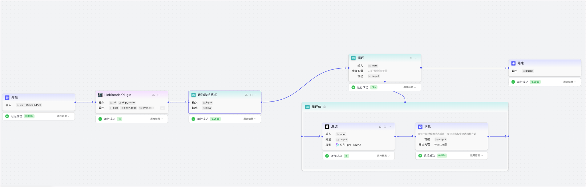
使用数组循环是最常用的处理方式之一，这里我们先不深入实现细节，在后续将给大家通过一个案例学习如何实现数组循环。
指定循环次数：
指定循环次数模式通常用于批量、顺序处理数据的场景，需要同时设置循环次数。循环次数默认为 10 次，支持设置为 1~1000 次，你也可以引用上游节点数值类型的输出参数。
无限循环：
无限循环类似编程语言中的 while等语法结构，需要通过终止循环节点停止循环。循环第一次运行之后，工作流对指定条件进行判断，满足一定条件时则结束循环，否则继续下一次循环。通常是基于循环节点的执行结果进行判断，例如循环调用插件获取数据，当插件执行失败时停止循环，否则持续执行循环只会得到同样的错误结果。
无限循环适用于以下场景：
- 批量处理数据：例如通过自定义插件调用 API，查看多个用户 ID 的数据，如果插件执行失败，则停止循环。
- 增强搜索：基于第一次检索内容询问用户，收到用户回答后，结合用户问题进行第二次检索，循环执行多次检索，直至符合用户要求。增强检索可提高检索结果的精准度、用户满意度。
- 回合制游戏：游戏通常包含多轮，直到满足胜利条件或游戏结束条件，否则游戏回合反复进行。
无限循环需要通过终止循环节点停止循环。终止循环节点通常和条件判断节点关联使用，条件判断节点判断某个条件成立时，流转到终止循环节点，自动跳出循环。
2 循环结构的使用¶
接下来我们将通过一个“小红书电商营销文案批量生成工作流”案例，学习如何使用循环结构。业务流程如下图：
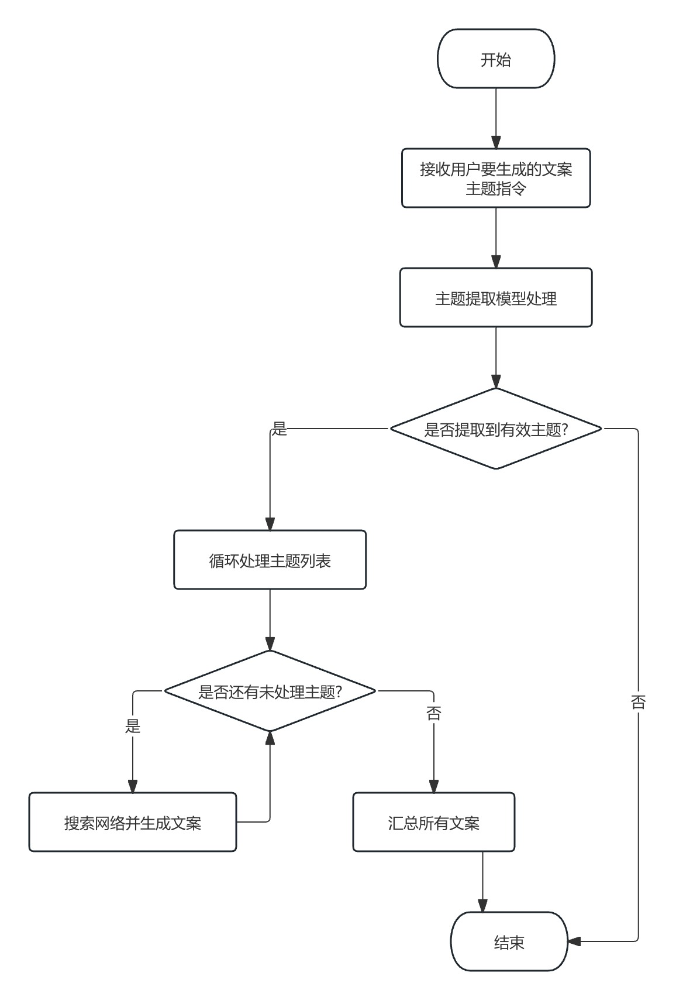
完整的工作流如下图
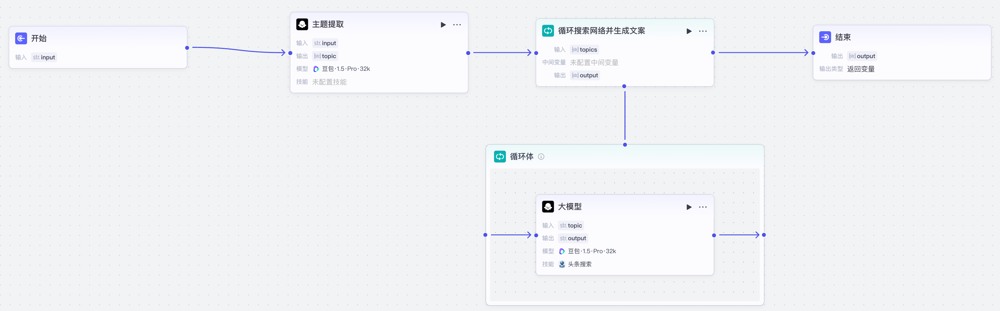
首先，用户输入一个自然语言语句，描述一下要生成哪些主体的营销文案。接下来，使用大模型提取出来主题，并生成数组格式返回
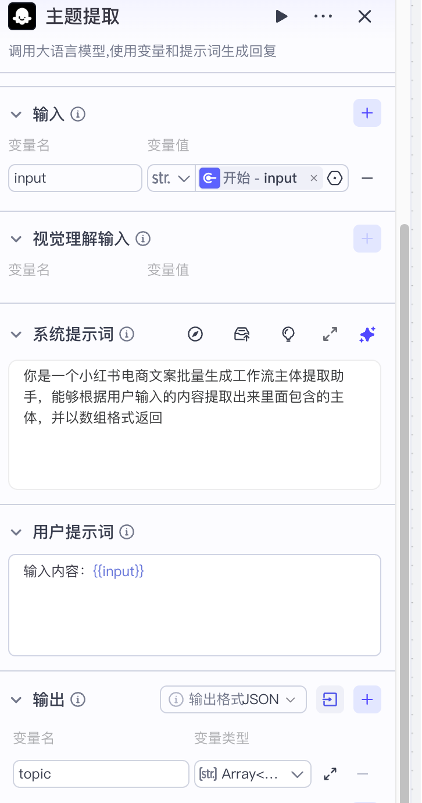
对应提示词如下：
接下来，通过循环结构对每个主题进行逐个处理：基于LLM+联网搜索功能生成对应主体的文案。首先设置循环节点
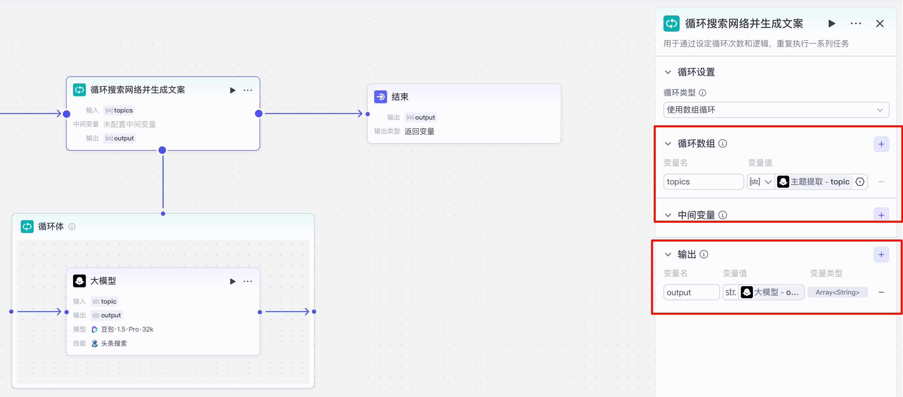
循环体中设置大模型的输入与输出， 这里输入需要选择：item(in topics)。 类似python代码的for item in list中的iterm一样，这个iteam就是数据的每一条元素。
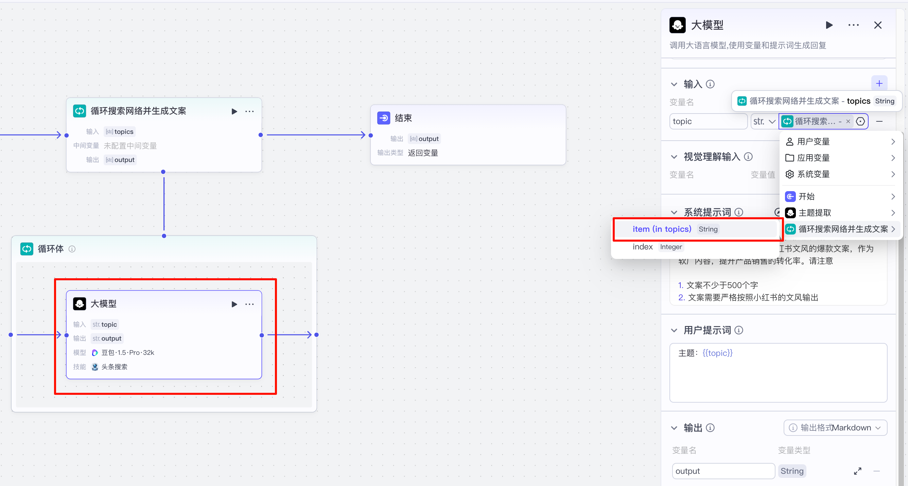
大模型的提示词如下
你是一个小红书文案生成专家，能够根据用输入的主题进行互联网检索，并生成小红书文风的爆款文案，作为软广内容，提升产品销售的转化率。请注意
1. 文案不少于500个字
2. 文案需要严格按照小红书的文风输出
接下来，试运行流水线，并输入内容：
调用过程略，我们查看循环体的执行结果，如下图。可以看到，这里根据输入的3个主题，生成了3个对应的内容
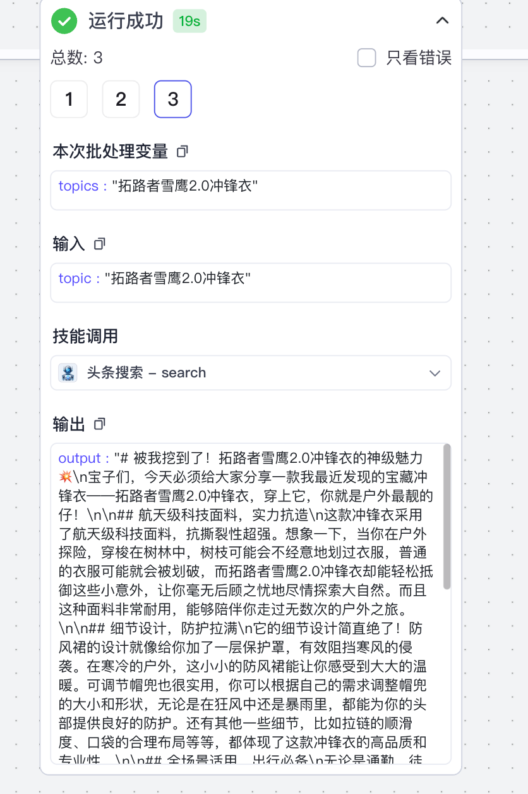
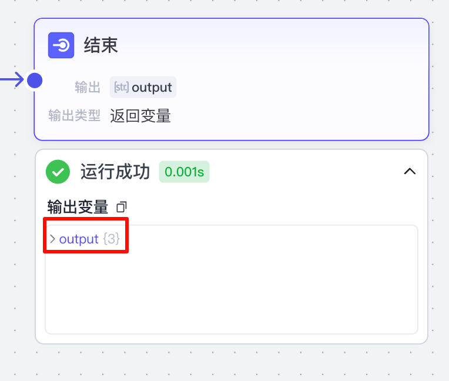
最终，我们预览一下生成的文案内容，可以看到，它的文案遵从了小红书常见的：
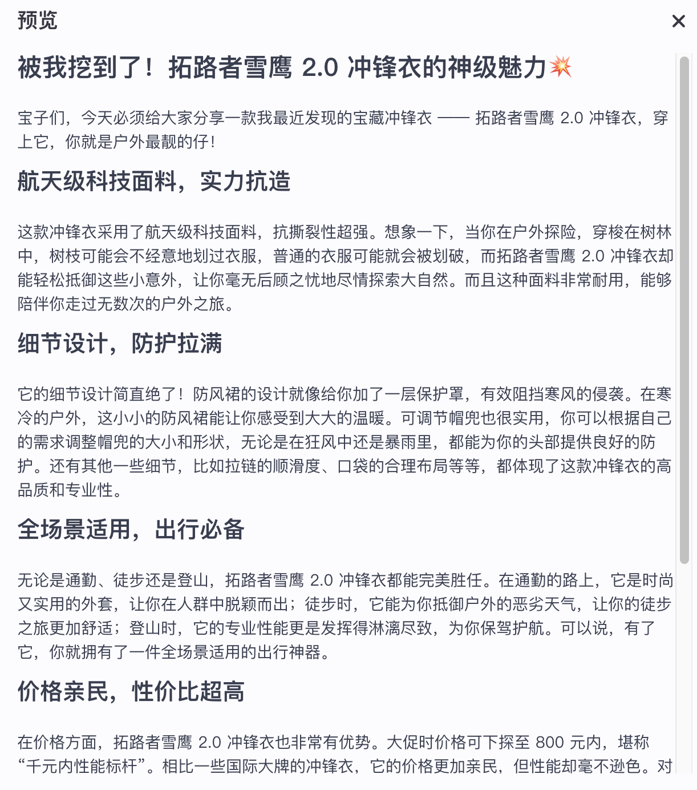
这里为什么不让大模型一次性处理输入的主体，而是通过循环一条一条处理？ 这是因为随着输入的内容变多，模型要处理的数据变得很多以后，效果就会有较大的下降，这就好比让一个人去写一个2万字的文章一定比2百字的质量会下降一个道理。所以我们在这里把一个处理3个主题的任务拆成了3个一次处理1个主题的任务机，减少了模型需要处理的数据量，从而保证效果。请同学们在实际工作中遵从该原则。